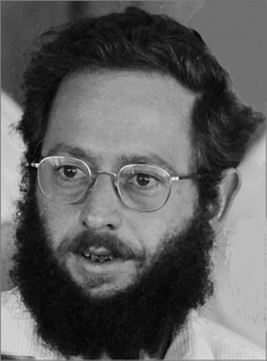

În ziua de astăzi optimizarea stă la baza oricărei activități deoarece
timpul este o resursă pe care nimeni nu o poate cumpăra. Astfel omul încearcă
să-și desfășoare activitățile zilnice cât mai repede.
Așadar, drumurile minime în graf au aplicații în multe domenii, pe lângă cel al informa
- Calcularea distanțelor pentru aplicații de tip GPS
- Motion planning
Este adesea utilizat în planificarea infrastructurii, cum ar fi drumurile, conductele, canalele și liniile de transport al energiei electrice, precum și pentru utilizări recreative, cum ar fi dezvoltarea unui sistem de trasee de drumeții într-un parc național (Chang).
- Rețele de comunicații
Care este cel mai rapid mod de a trimite un e-mail? Unde este cel mai bun loc pentru a furniza un CDN al imaginilor și JavaScript? Ambele sunt aplicații ale drumului minim. Răspunsurile se află în rețelele distribuite, cum ar fi Amazon Web Services și rețelele de retransmisie ale serverelor de e-mail.
Acesta este motivul pentru care, de exemplu, vi se cere să alegeți unde doriți să trăiască serverele dvs. pe AWS. Dacă începeți un blog care se adresează afacerilor locale din Boston, va fi mai rapid să le difuzați imagini și conținut din regiunea nord-est în loc de sud-est. Informațiile se deplasează destul de repede, dar chiar și raționamentul spațial de bază ne poate convinge că va dura mai puțin timp pentru a călători către clienții noștri din Boston de la servere din Ohio sau Virginia decât de la servere din Singapore sau Sydney.
Edsger Wybe Dijkstra
Edsger Wybe Dijkstra (n. 11 mai 1930 Rotterdam, Țările de Jos – d. 6 august 2002 , Nuenen, Gerwen en Nederwetten, Țările de Jos) a fost un informatician olandez.
A studiat la la Universitatea din Leiden unde a fost licențiat în fizică. În timpul vieții a lucrat ca la Burroughs Corporation, mai apoi la Universitatea Tehnică din Eindhoven și în cele din urmă la Universitatea din Austin, Texas, unde a activat până în 2000.
Mare lui descoperire este algorimul care îi poartă numele, algorimul lui Dijkstra, care determină drumul minim cu sursă unică într-un graf ponderat.
Stephen Warshall
Stephen Warshall (15 noiembrie 1935 - 11 decembrie 2006) a fost un informatician american. În timpul carierei sale, Warshall a efectuat cercetări și dezvoltări în sisteme de operare, proiectare compilatoare, proiectare limbaj și cercetare operațională. Warshall a murit pe 11 decembrie 2006 de cancer la casa sa din Gloucester, Massachusetts.
Există o anecdotă interesantă despre dovada sa că algoritmul de închidere tranzitivă, cunoscut acum sub numele de algoritmul Warshall, este corect. El și un coleg de la Technical Operations au pariat o sticlă de rom pe cine ar putea determina mai întâi dacă acest algoritm funcționează întotdeauna. Warshall a venit cu dovada sa peste noapte, câștigând pariul și romul, pe care le-a împărtășit cu cel care a pierdut pariul. Deoarece Warshall nu-i plăcea să stea la un birou, el și-a făcut o mare parte din munca creativă în locuri neconvenționale, cum ar fi pe un velier în Oceanul Indian sau într-o livadă grecească de lămâi.

Richard Ernest Bellman
Richard Ernest Bellman (26 august 1920 - 19 martie 1984) a fost un matematician american aplicat, care a introdus programarea dinamică în 1953 și a adus contribuții importante în alte domenii ale matematicii.
Deși descoperind algoritmul după Ford, el este menționat în algoritmul Bellman-Ford, denumit uneori și Algoritmul de corectare a etichetelor, care calculează cele mai scurte căi cu o singură sursă într-un graf ponderat în care unele dintre greutățile marginilor pot fi negative. Algoritmul lui Dijkstra realizează aceeași problemă cu un timp de rulare mai mic, dar necesită greutăți pozitive.